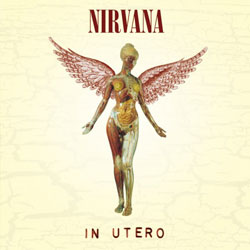
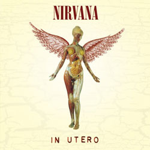
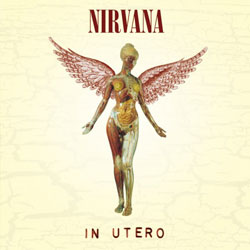

.jpeg) 

Kurt Cobain, Dave Grohl e Krist Novoselic tinham seus 20 e poucos anos quando o disco saiu (nevermind), e sabiam muito bem o que era viver nos Estados Unidos e em um mundo onde os jovens tinham poucas oportunidades, uma raiva reprimida e muito para dar, mas pouca gente para ouvir.
Sem Internet e Redes Sociais, as narrativas eram normalmente controladas por grandes empresas que direcionavam seus esforços a públicos com poder de compra e investimento, normalmente formados por pessoas mais velhas.
Quando de repente os maiores veículos do país e do mundo estavam mostrando um clipe repleto de jovens gastando energia na quadra de um colégio, eles não apenas se viram representados como empoderados, entendendo que faziam parte e tinham grande importância no mundo em que estavam inseridos.
O lado negativo é que quando as corporações perceberam que poderiam transformar isso em dinheiro, transformaram a coisa toda em um negócio que deixava a arte em planos secundários, mas isso é papo pra outro editoria
